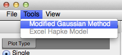

MGM
PySAT implements the Modified Gaussian Model as a direct port of the MatLab Code released by Brown University. MGM supports two data entry methodologies, (1) loading of .fit and .asc files and (2) direct integration with a plotted spectra.
Loading parameter and wavelength files
To open a new MGM window, via the main menu bar select Tools > Modified Gaussian Model.

A new, unpopulated MGM window is opened. Opened using this method, the MGM windows expects that the user will supply, at a minimum, a spectra file with wavelength and natural log reflectance information. Additionally, a user can supply a parameter file which loads polynomial coefficients, coefficient errors, absorption band information, continuum type, and stopping criteria.

PySAT expects that data files will be in the same format as used by the original MatLab MGM code.
Sample .fit
:
opx1b
-220,50,50
300,2600,300
.002,1E-06
Q
0.85E+00 -0.1E-05 0.0E+00 0.0E+00
10. 0.1E-3 0.1E-6 0.1E-6
3
0.3330E+03 0.400E+03 -0.20E+02
10000. 10000. 100.
0.1000E+04 0.250E+03 -0.1E+01
200. 400. 10.
0.2000E+04 0.300E+03 -0.1E+01
300. 400. 10.
Old RMS 0.112768E-01 New RMS= 0.112768E-01 Imp= 0.651926E-08
Sample .asc
372.00 0.705308
376.00 0.715715
381.00 0.728052
386.00 0.736994
389.00 0.742412
392.00 0.746045
Once loaded the user can modify all cells by simply clicking within them. Locking and unlocking of parameters and band parameters is supported through contextual menus, i.e., it is possible to lock a column or row by right clicking on the column header or row number.

Sample Data
The supplied sample data can be fit once before the stopping criteria are hit. Selecting Fit Until will therefore only fit one time; the stopping criteria have been reached after a single iteration.
Once fit, absoprtion band specifications are updated. Additionally, PySAT has updated all of the plot lines. These can be displayed via the Display menu.

Integration with PySAT
Under Active Development
This functionality is in an alpha stage and undergoing development as the PySAT development team becomes more familiar with MGM parameterization.
Alternatively, it is possible to interactively select a continuum corrected spectra from a plot window via the contextual menu.

This opens a new MGM window, with the spectra added and the continuum parameters populated with a best guess continuum.

Linear Spline Coefficient Estimation
Moving between PySAT and the MGM interface, we estimate the standard form coefficients using a polynomial fit. For regression and linear continuum this is a first order fit. The Horgan correction method estimates a 3rd order polynomial. We have decided to estimate the linear spline (3 point linear) using a second order polynomial.